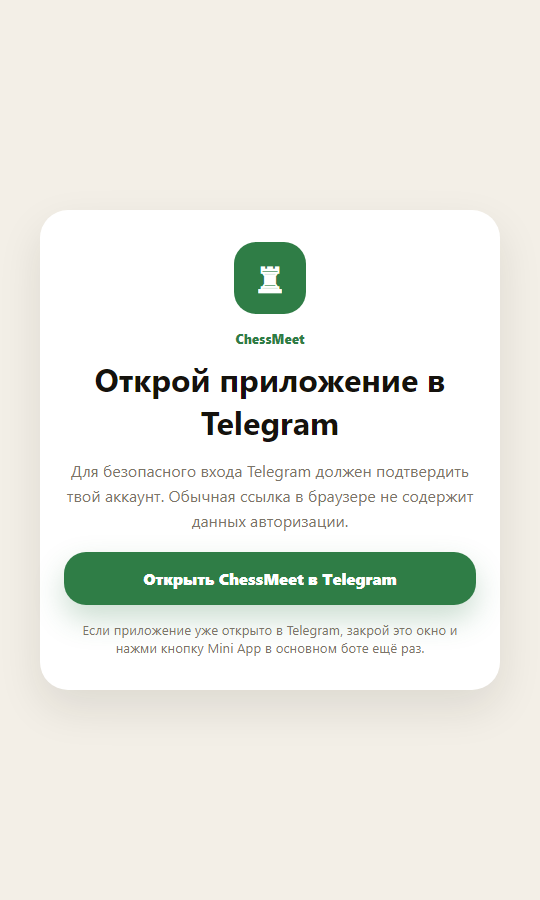

Production case study
Scout Board
A production catalog and lead platform for a model agency, with profile discovery, applications, content management and a Telegram admin workflow.
A small selection of real products and considered concepts. Each one starts with a business or user problem, then earns its interface.
A production catalog and lead platform for a model agency, with profile discovery, applications, content management and a Telegram admin workflow.

E-commerce concept focused on product presentation, responsive UI, interaction design and checkout UX.

Telegram Mini App for offline chess meetups, with applications, profiles, check-in, referrals and a protected admin bot.